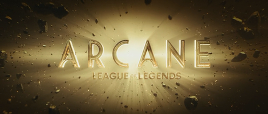

My Arcane website

What this website is
Welcome to my Arcane website!
This website is a small informational site about one of my favorite pieces of media to hopefully bring in more fans, or provide some infomation for existing fans. This is my first website so some things may look dodgy and there may be spoilers throughout this website, so read at your on risk!
What is Arcane?
Arcane is an animated Netflix show made to give background to some of the champions (playable characters) of the much loved (and hated) video game League of Legends or “LoL” for short. The story is very much canon to game as confirmed by head of League studios Riot Meddler. The show was created by Christian Linke and Alex Yee and the animation studio Fortiche produced the show with the supervision of Riot Games. With a mix of 2D and 3D animation the beauty of the world is brought to life with stunning visuals. The characters are given much depth with amazing voice acting, character writing and design.